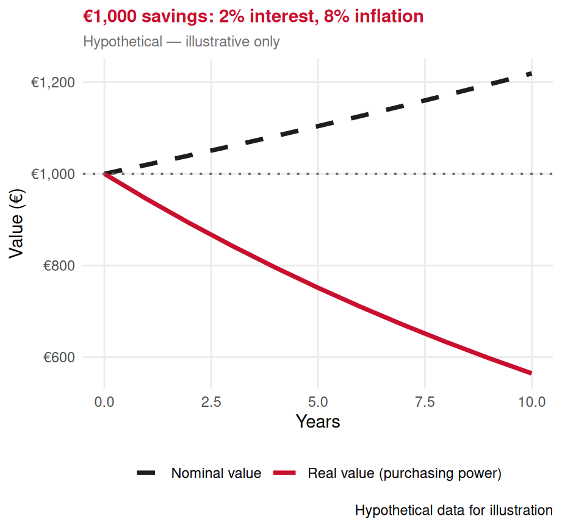
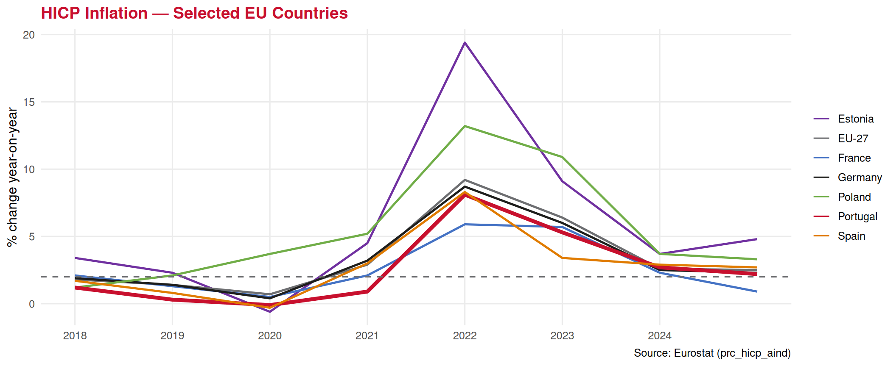

Inflation
Lecture 23: Measuring and Understanding Rising Prices
Paulo Fagandini
2026
Recap: GDP ⏪
Last lecture we built the core measurement tool of macroeconomics:
✅ GDP = market value of final goods & services produced in a country
✅ Three approaches: expenditure (\(Y = C+I+G+NX\)), income, value-added
✅ Nominal GDP uses current prices — Real GDP strips out inflation
✅ The GDP deflator measures economy-wide price changes
👉 Today we go deep on that price change itself: inflation
What is it? How is it measured? What does it do to an economy — and to tourism?
Part I: What is Inflation?
The Definition 🔥
Inflation is the general and sustained increase in the prices of goods and services over time.
When inflation is high, the purchasing power of money falls — the same amount of money buys fewer goods and services than before.
Three key words:
1️⃣ General — not one price rising (that’s a relative price change), but prices across the board
2️⃣ Sustained — not a one-off spike, but a persistent upward trend
3️⃣ Prices — we are measuring the cost of a representative basket, not output
Related concepts:
❄️ Deflation — prices falling (inflation < 0)
🐌 Disinflation — inflation still positive but slowing down
🚀 Hyperinflation — extreme, out-of-control inflation (e.g. Zimbabwe 2008, Germany 1923)
🎯 Target — ECB targets inflation close to but below 2%
What Causes Inflation? 🤔
🛒 Demand-pull
“Too much money chasing too few goods”
When aggregate demand rises faster than the economy can produce:
- Strong consumer spending
- Government stimulus
- Easy credit / low interest rates
👉 Post-COVID boom: pent-up demand surged, supply couldn’t keep up
🏭 Cost-push
Rising production costs passed on to consumers:
- Higher energy prices
- Rising wages
- Supply chain disruptions
- Raw material shortages
👉 2022 energy crisis: gas prices spiked → heating, transport, food all rose
💰 Monetary
“Inflation is always and everywhere a monetary phenomenon” — Milton Friedman
Too rapid expansion of the money supply eventually feeds into prices.
👉 Central banks printing money to fund deficits can trigger hyperinflation
A Tourism Example 🏖️
Imagine a hotel in the Algarve in 2019 vs 2023:
| Cost item | 2019 | 2023 | Change |
|---|---|---|---|
| Energy (electricity/gas) | €8,000/month | €14,000/month | +75% |
| Food supplies | €12,000/month | €16,000/month | +33% |
| Cleaning staff wages | €15,000/month | €18,500/month | +23% |
| Total costs | €35,000/month | €48,500/month | +39% |
👉 The hotel must raise room rates to survive — contributing to tourism price inflation.
👉 But if room rates rise faster than wages in source markets (Germany, UK), tourists face a real price increase — demand may fall.
💡 This is why inflation matters so directly for the tourism industry — costs and competitiveness move together.
Part II: Measuring Inflation — The CPI
The Consumer Price Index (CPI) :shopping_bags:
The Consumer Price Index (CPI) measures the cost of a fixed basket of goods and services representative of a typical household’s consumption, relative to the cost of that same basket in a base year.
\[\text{CPI}_t = \frac{\text{Cost of basket in year } t}{\text{Cost of basket in base year}} \times 100\]
\[\text{Inflation rate} = \frac{\text{CPI}_t - \text{CPI}_{t-1}}{\text{CPI}_{t-1}} \times 100\%\]
Building the CPI Basket 🧺
The basket is constructed to reflect what a typical household buys. In the EU, this is called the HICP (Harmonised Index of Consumer Prices) — harmonised across member states for comparability.
Main HICP categories:
| Category | Approx. share |
|---|---|
| Housing, water, electricity | ~25% |
| Food & non-alcoholic beverages | ~20% |
| Transport | ~13% |
| Recreation & culture | ~9% |
| Restaurants & hotels | ~8% |
| Clothing & footwear | ~6% |
| Other | ~19% |
💡 Key properties of the CPI basket:
1️⃣ Fixed quantities — we re-price the same bundle each period
2️⃣ Updated periodically — basket weights are revised every few years to reflect changing consumption patterns
3️⃣ Reflects consumer spending, not production — differs from the GDP deflator
⚠️ The CPI can overstate inflation if consumers substitute away from goods that have become expensive (substitution bias)
CPI Calculation — Worked Example 📝
A simple economy with three goods — a tourist town in the Algarve:
| Good | Basket qty | Price 2022 | Price 2023 | Price 2024 |
|---|---|---|---|---|
| Hotel night | 5 | €80 | €92 | €98 |
| Restaurant meal | 10 | €20 | €23 | €24 |
| Bus ticket | 8 | €5 | €5.50 | €6 |
Cost of basket:
- 2022: \((5×80)+(10×20)+(8×5) = €640\) → CPI = 100 (base)
- 2023: \((5×92)+(10×23)+(8×5.50) = €734\) → CPI = 114.7
- 2024: \((5×98)+(10×24)+(8×6) = €778\) → CPI = 121.6
Inflation rates:
- 2022→2023: \(\frac{114.7 - 100}{100} = \mathbf{14.7\%}\)
- 2023→2024: \(\frac{121.6 - 114.7}{114.7} = \mathbf{6.0\%}\)
👉 Inflation slowed from 14.7% to 6.0% — this is disinflation (still rising prices, but more slowly).
Portugal’s HICP Inflation 🇵🇹

Inflation Across EU Countries — The 2022 Spike 🌐

👉 The 2022 energy shock hit all EU countries — but Eastern Europe faced much higher peaks.
Part III: Consequences of High Inflation
1. Loss of Purchasing Power 💸
The most immediate consequence: the same wage buys less
\[\text{Real wage} = \frac{\text{Nominal wage}}{\text{Price level}}\]
If your salary rises 3% but inflation is 8% → your real wage fell by ~5%.
Who suffers most:
🧓 Pensioners and fixed-income earners — income doesn’t automatically adjust
🔅 Low-income households — spend a higher share of income on essentials (food, energy) which tend to rise fastest
💰 Savers — money in the bank loses real value if interest rates are below inflation
Tourism impact:
✈️ Foreign tourists from low-inflation countries visiting high-inflation Portugal find prices rising faster than expected
🏨 Portuguese domestic tourists face squeezed budgets — may downgrade or cancel holidays
👉 Inflation erodes the real income available for discretionary spending like tourism
2. Erosion of Savings 🏦
Real interest rate = nominal interest rate − inflation rate
\[r = i - \pi\]
💡 Example:
- Bank pays 2% annual interest on savings
- Inflation is 8%
- Real return = \(2\% - 8\% = \mathbf{-6\%}\)
Your savings are losing 6% of their real value every year.
👉 Rational response: spend now rather than save, or move money into real assets (property, gold, foreign currency) — which can fuel further inflation.
3. Economic Uncertainty ❓
High inflation makes it harder to plan:
🏨 For tourism businesses:
- Cannot confidently price a holiday package 12 months ahead
- Suppliers (food, energy, cleaning) revise costs unpredictably
- Investment decisions (new pool? renovation?) become riskier
- Long-term contracts become liabilities
✈️ For tour operators:
- Brochure prices set months in advance may no longer be profitable
- Hedging fuel costs becomes essential but expensive
👪 For households:
- Difficult to budget for a holiday when prices change rapidly
- Postpone large discretionary purchases (holidays, travel)
- Uncertainty reduces consumer confidence
📉 The result:
Investment falls → growth slows → potentially more unemployment
👉 This is the classic inflation-unemployment trade-off we saw in Lecture 20 (the Phillips Curve)
5. Export Competitiveness 🌐
If Portugal’s prices rise faster than those of competitor destinations, Portuguese tourism becomes relatively more expensive for foreign visitors.
\[\text{Real exchange rate} = \frac{e \times P^*}{P}\]
Where \(e\) = nominal exchange rate, \(P^*\) = foreign price level, \(P\) = domestic price level.
Example:
A British tourist compares holidays in Portugal vs Spain.
- Both cost ~£800 in 2019
- Portugal’s inflation 2019-2023: +20% cumulative
- Spain’s inflation 2019-2023: +15% cumulative
- GBP/EUR exchange rate unchanged
👉 Portugal’s holiday now costs ~£960 vs Spain’s ~£920 → Portugal loses competitiveness
The good news for Portugal:
Since Portugal uses the euro, there is no exchange rate risk against other Eurozone countries.
The risk is mainly vs non-euro source markets: UK 🇬🇧, USA 🇺🇸, Brazil 🇧🇷
👉 Sterling or dollar depreciation vs euro = Portugal becomes more expensive for those visitors, even without domestic inflation.
Part IV: CPI vs GDP Deflator
Two Ways to Measure Prices 📏
We now have two inflation measures — it’s important to understand when to use which:
| CPI / HICP | GDP Deflator | |
|---|---|---|
| Covers | Fixed basket of consumer goods | All goods in GDP (C+I+G+NX) |
| Basket | Fixed weights (updated periodically) | Changes with production mix |
| Imports | Included (we buy imported goods) | Excluded (not domestic production) |
| Used for | Wage negotiations, pension indexing, ECB target | National accounts, real GDP calculation |
| Best for | Measuring cost of living | Measuring economy-wide price level |
💡 For tourism policy, the CPI (especially the “restaurants & hotels” component) is the most relevant — it directly measures the price of tourism services to consumers.
Portugal HICP — Tourism Component 🏖️

👉 Accommodation and restaurant prices often diverge from overall inflation — sometimes rising faster (peak demand), sometimes slower (competitive pressure).
Exercises
📝 Exercise 1 — Multiple Choice
In 2022, the CPI in Portugal was 108.5. In 2023, it was 115.7. What was the inflation rate in 2023?
(A) 7.2%
(B) 6.6%
(C) 8.5%
(D) 5.9%
Correct answer: (B)
\[\text{Inflation} = \frac{115.7 - 108.5}{108.5} \times 100 = \frac{7.2}{108.5} \times 100 = \mathbf{6.6\%}\]
Option A (7.2%) is the absolute point difference, not the rate — a common error. Always divide by the starting CPI, not subtract directly.
📝 Exercise 2 — Multiple Choice
A Portuguese hotel manager locks in a supply contract for food at fixed prices for 12 months, starting January 2022. Inflation then hits 8% over the year. Which statement best describes the outcome?
(A) The hotel benefits: its input costs are fixed while it can raise room prices
(B) The hotel is harmed: it must honour the fixed contract but its own revenue is eroded by inflation
(C) The supplier benefits: it receives payments that are worth more in real terms
(D) Neither party is affected because fixed contracts are inflation-neutral
Correct answer: (A)
The hotel locked in input costs — it pays the same nominal price for food regardless of 8% inflation. Meanwhile, it can pass inflation onto guests via higher room rates. The supplier is harmed (receives fixed nominal payment worth less in real terms). Option C is the opposite of what happens. Option D is wrong — fixed contracts have distributional effects under inflation.
📝 Exercise 3 — Open Question
Consider the following data for a small coastal tourism economy. The consumption basket contains three goods:
| Good | Qty in basket | Price 2022 | Price 2023 | Price 2024 |
|---|---|---|---|---|
| Hotel night | 4 | €90 | €105 | €112 |
| Meal at restaurant | 8 | €25 | €28 | €29 |
| Museum ticket | 3 | €12 | €12.50 | €13 |
(a) Calculate the CPI for 2022, 2023 and 2024, using 2022 as the base year.
(b) Calculate the inflation rate for 2023 and 2024.
(c) Is the economy experiencing inflation, disinflation, or deflation between 2023 and 2024? Explain.
(d) A hotel worker earns €1,800/month in 2022. Their wage rises to €1,950 in 2023 and €2,000 in 2024. Calculate their real wage in each year (in 2022 prices) and comment on whether they are better or worse off.
Solution
(a) Cost of basket:
- 2022: \((4×90)+(8×25)+(3×12) = 360+200+36 = €596\) → CPI = 100
- 2023: \((4×105)+(8×28)+(3×12.50) = 420+224+37.50 = €681.50\) → CPI = 114.3
- 2024: \((4×112)+(8×29)+(3×13) = 448+232+39 = €719\) → CPI = 120.6
(b) Inflation rates:
- 2023: \((114.3 - 100)/100 = \mathbf{14.3\%}\)
- 2024: \((120.6 - 114.3)/114.3 = \mathbf{5.5\%}\)
(c) Between 2023 and 2024 the economy is experiencing disinflation: prices are still rising (CPI went from 114.3 to 120.6, inflation still positive at 5.5%) but the rate of increase slowed sharply from 14.3% to 5.5%. This is not deflation (that would require CPI to fall).
(d) Real wage = Nominal wage / (CPI/100):
- 2022: €1,800 / 1.000 = €1,800
- 2023: €1,950 / 1.143 = €1,706 ← worse off despite the raise
- 2024: €2,000 / 1.206 = €1,659 ← still falling
The worker received two nominal pay rises but is worse off in real terms each year — their wages grew much more slowly than prices (8.3% and 2.6% nominal vs 14.3% and 5.5% inflation).
Summary 📚
Today we covered:
✅ Inflation = general, sustained price increase; erodes purchasing power
✅ Three causes: demand-pull, cost-push, monetary
✅ The CPI/HICP — measuring a fixed basket at current prices
✅ CPI inflation formula: \(\frac{CPI_t - CPI_{t-1}}{CPI_{t-1}} \times 100\%\)
✅ Real wage = nominal wage / price level — the welfare-relevant measure
✅ Eight consequences of uncontrolled inflation: purchasing power, savings, uncertainty, social instability, relative prices, capital flight, exports
✅ CPI vs GDP deflator — different coverage, different uses
Next lecture (Lecture 24):
🏦 Central Banks and Monetary Policy — how the ECB uses interest rates to fight inflation
Thank You! 👋
Questions?
📧 paulo.fagandini@ext.universidadeeuropeia.pt
Next class: Thursday, May 15th, 2026

Economics of Tourism | Lecture 23
4. Social and Political Consequences 📢
Uncontrolled inflation — hyperinflation — can destabilise entire societies.
Historical examples:
🇩🇪 Germany, 1923 — Weimar Republic hyperinflation. A wheelbarrow of cash to buy bread. Wiped out the middle class’s savings, contributed to political radicalisation.
🇿🇼 Zimbabwe, 2008 — inflation peaked at ~89.7 sextillion percent per month. Prices doubled every 24 hours. Currency became worthless.
🇻🇪 Venezuela, 2018 — ~1,000,000% annual inflation. Severe shortages of food and medicine.
Why does this destabilise?
⚖️ Inequality surges — debtors gain, creditors and savers lose
👪 Middle class wealth destroyed
📉 Business investment collapses
💢 Public trust in government and institutions erodes
🤝 Social contracts break down
💡 For tourism: political instability and currency collapse make a country immediately unattractive as a destination and unaffordable for domestic travel.